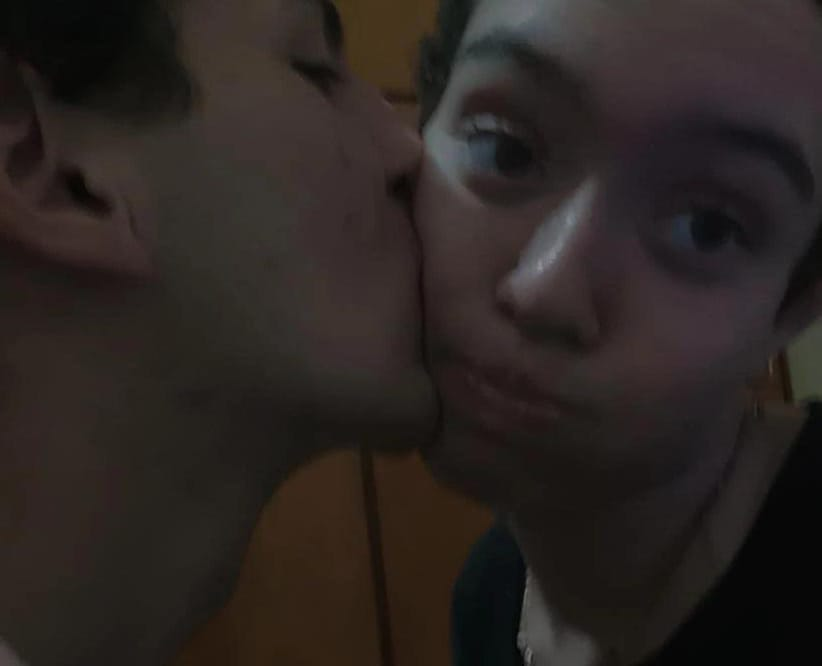
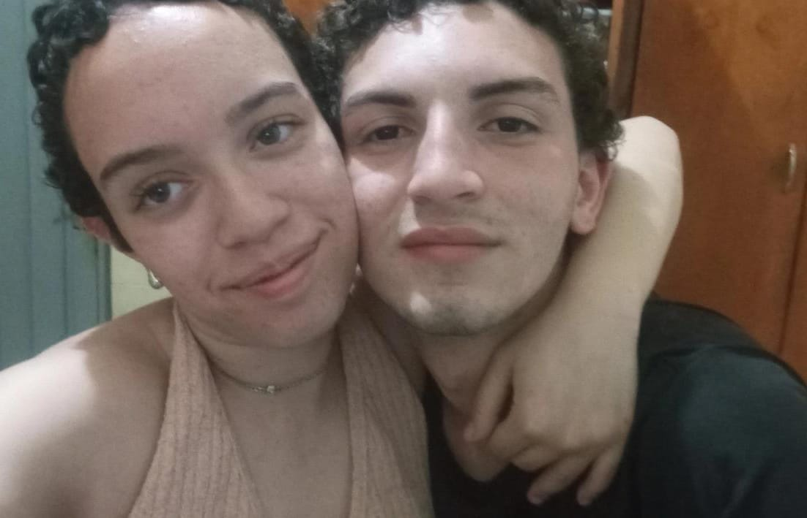
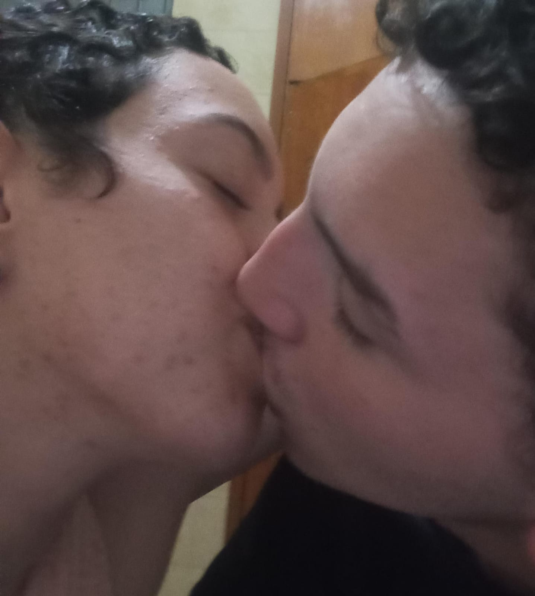
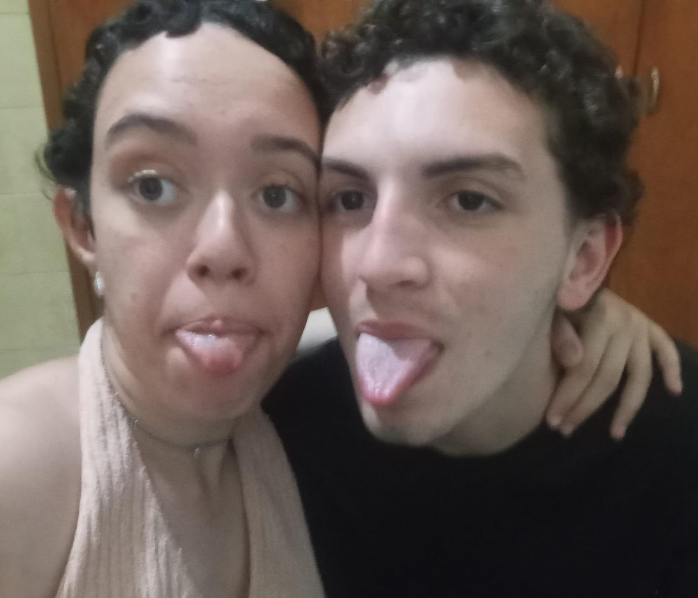
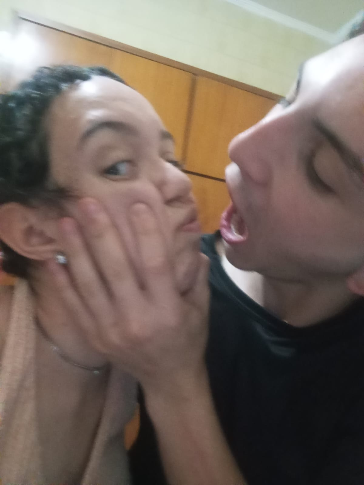
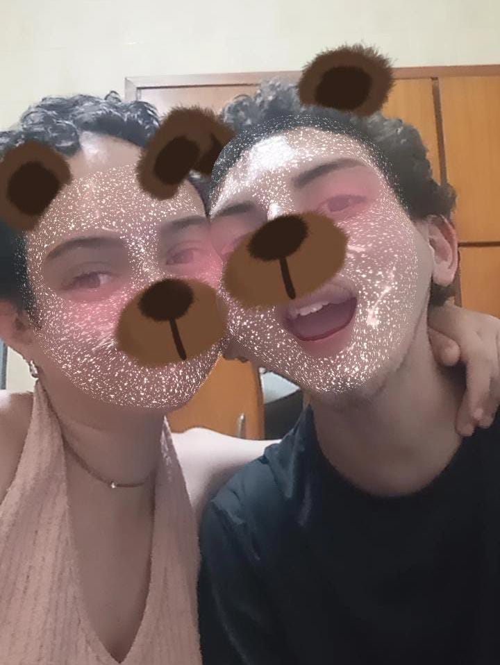
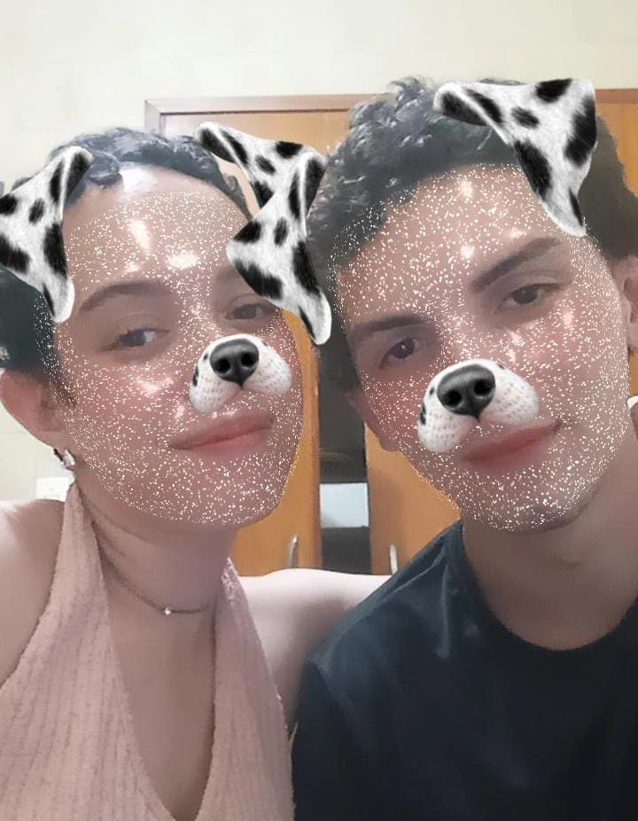
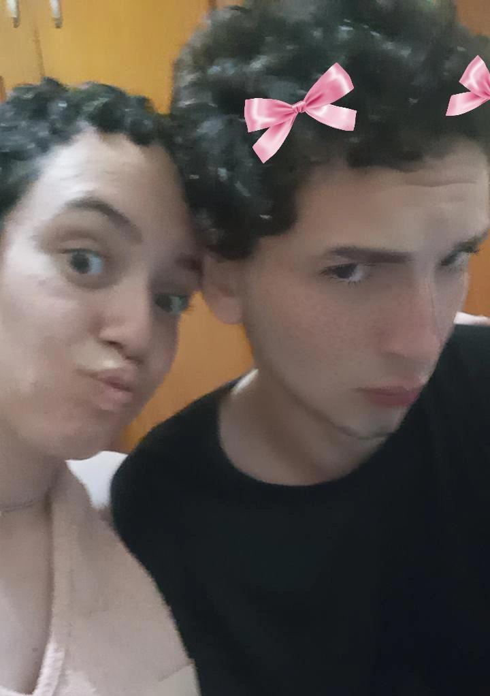
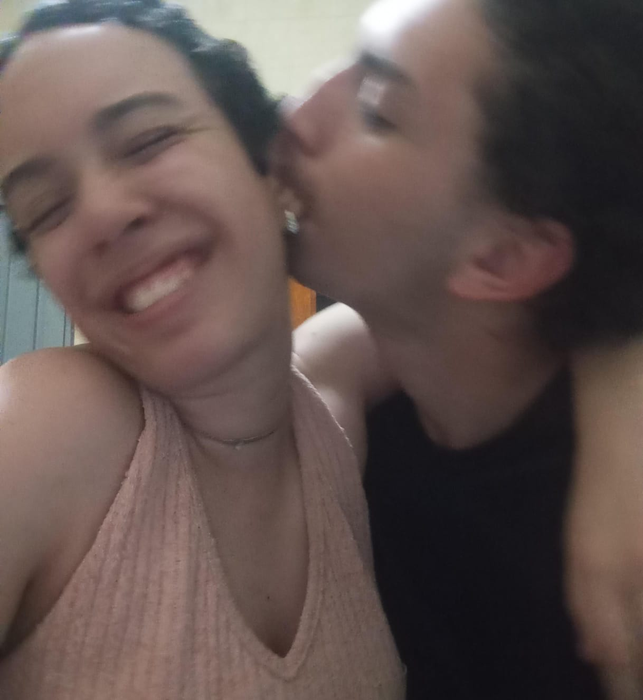

Desde 09/11/2025 — Heron & Taissa









Como gotas de chuva, me apaixonei por você, silencioso, inevitavelmente.
Desabrochei como uma pétala diante do sol da manhã, e cada raio seu me atravessou até o coração.
Banhando seu peito, fui maré e maré-alta, quebrando em você como ondas que não sabem parar.
Cada gota era um desejo, preso a história desse desejo que me mantém vivo, e agora tudo em mim corre como um oceano tentando alcançar seu coração.
Não quero ser tempestade, nem trovão. Quero ser o sussurro que você ouve quando o sol toca a janela. Quero seu pulso se alinhando ao meu em silêncio, como dois rios que se encontram depois de uma noite longa demais.
Mas antes do sol, veio a chuva. Lembro daquela noite, quando o céu desabou sobre nós dois. A chuva corria pelo rosto, fria, mas o seu riso, era quente o bastante pra secar o mundo inteiro. As luzes dançavam como estrelas líquidas, e por um segundo o tempo pareceu parar, só pra nos deixar ali, entre o trovão e o toque. Foi ali, sob a tempestade, que entendi: eu já estava perdido em você.
Quero ser o horizonte que você saboreia com os olhos fechados. A tela onde as estrelas escrevem o que não ousamos dizer.
Quero que o vento nos teça juntos, que as árvores se inclinem pra ver, que o ar pese com o aroma do nosso abraço.
Quero afundar em você como o crepúsculo se afoga no mar, sem pressa, sem volta. Que cada instante seja um movimento que nos empurra de volta um ao outro.
Quero que sejamos o instante entre o sol e as estrelas, suspensos, presos, infinitos.
E mesmo quando você escapar do meu alcance, ainda cairei por você. Como gotas de chuva. De cada canto do céu, de cada canto meu.
Guarde esse poema no peito. Cada linha é uma gota de mim, e mesmo se o tempo nos desgastar, ainda assim eu cairia mil vezes, só pra te encontrar outra vez.